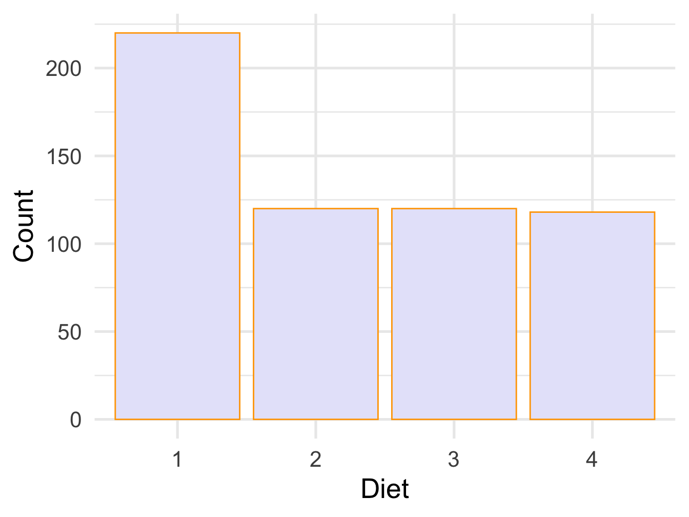
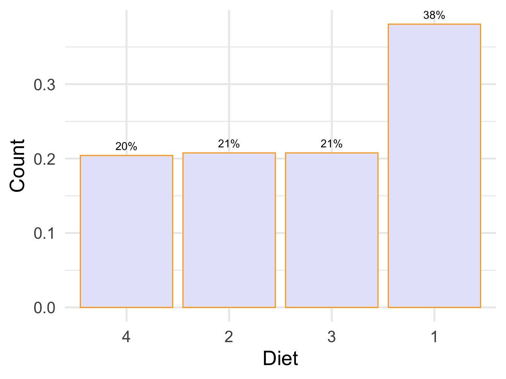

Chapter 5 Multivariate data
Now we will plot using multiple variables
Let’s use diamond dataset from tidyr
## # A tibble: 6 x 10
## carat cut color clarity depth table price x y z
## <dbl> <ord> <ord> <ord> <dbl> <dbl> <int> <dbl> <dbl> <dbl>
## 1 0.23 Ideal E SI2 61.5 55 326 3.95 3.98 2.43
## 2 0.21 Premium E SI1 59.8 61 326 3.89 3.84 2.31
## 3 0.23 Good E VS1 56.9 65 327 4.05 4.07 2.31
## 4 0.290 Premium I VS2 62.4 58 334 4.2 4.23 2.63
## 5 0.31 Good J SI2 63.3 58 335 4.34 4.35 2.75
## 6 0.24 Very Good J VVS2 62.8 57 336 3.94 3.96 2.485.1 Bar plot with categories, plot depth by cut
ggplot(diamonds)+
geom_bar(aes(x= cut, fill=color))+
theme_minimal(base_size = 20)+
ylab("Count")+ xlab("Cut")
Figure 5.1: Bar plot with grouping
5.2 Bar plot with categories, side by side
ggplot(diamonds)+
geom_bar(aes(x= cut, fill=color),position = position_dodge())+
theme_minimal(base_size = 20)+
ylab("Count")+ xlab("Cut")Figure 5.2: Bar plot with grouping
5.3 Segemented bar plot, appealing viz
diamonds %>%
group_by(cut, color) %>%
summarize(n = n()) %>%
mutate(prct = n/sum(n),
label = scales::percent(prct)) %>%
ggplot()+
geom_col(aes(x=cut,y=prct,fill=color),position='fill')+
geom_text(aes(x=cut,y=prct,label = label),
size = 3,
position = position_stack(vjust = 0.5)) +
theme_minimal(base_size = 20)+
ylab("Percentage")+ xlab("Cut")## `summarise()` regrouping output by 'cut' (override with `.groups` argument)

Figure 5.3: Bar plot with grouping
5.4 Scatter plot
ggplot(diamonds)+
geom_point(aes(x=carat,y=price,color=color))+
theme_bw()+
xlab("Carat")+ ylab("Price")Figure 5.4: Scatter plot with grouping
Let’s see if the depth is related to price
ggplot(diamonds)+
geom_point(aes(x=carat,y=price,color=color))+
geom_smooth(aes(x=carat,y=price,color=color),method='lm')+
theme_bw()+
ylab("Price")+ xlab("Price")## `geom_smooth()` using formula 'y ~ x'
Figure 5.5: Scatter plot with grouping and smooth line
5.5 Grouping using facets
ggplot(diamonds)+
geom_point(aes(x=carat,y=price))+
geom_smooth(aes(x=carat,y=price),method='lm')+
facet_wrap(~color)+
theme_bw()+
ylab("Carat")+ xlab("Price")## `geom_smooth()` using formula 'y ~ x'

Figure 5.6: Scatter plot with facets and smooth line
5.6 Grouping using facets
## [1] "D" "E" "F" "G" "H" "I" "J"diamonds2$color<- factor(diamonds2$color, levels =c("D" ,"E" ,"F" ,"G", "H", "I", "J"),
labels=c("Red","Blue","Orange","Pink","Indigo","Jade","Orange"))
ggplot(diamonds2)+
geom_point(aes(x=carat,y=price))+
geom_smooth(aes(x=carat,y=price),method='lm')+
facet_wrap(~color)+
theme_bw()+
ylab("Carat")+ xlab("Price")## `geom_smooth()` using formula 'y ~ x'Figure 5.7: Scatter plot with facets and different labels